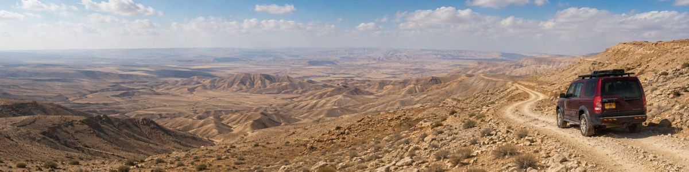

מדריך שטח
כניסות לשטח ודרכי גישה במדבר יהודה
ריכזנו עבורכם את כל דרכי הגישה והכניסות המרכזיות לשטח במדבר יהודה. בחרו אזור ונווטו ישירות באופרוד.
צפון
כניסות בחלק הצפוני
קידר הישנה
נווט באופרוד
אזור התעשייה מעלה אדומים
נווט באופרוד
נבי מוסא
נווט באופרוד
אלמוג
נווט באופרוד
מרכז
כניסות בחלק המרכזי
דרום
כניסות בחלק הדרומי
כרמל
נווט באופרוד
הנוקדים
נווט באופרוד
מעלה יאיר
נווט באופרוד
חניון לילה מורג
נווט באופרוד
ערד
נווט באופרוד
חניון לילה צוק תמרור
נווט באופרוד